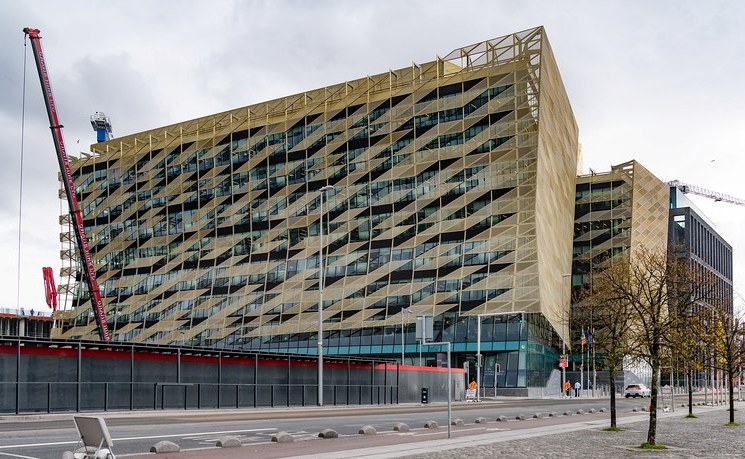
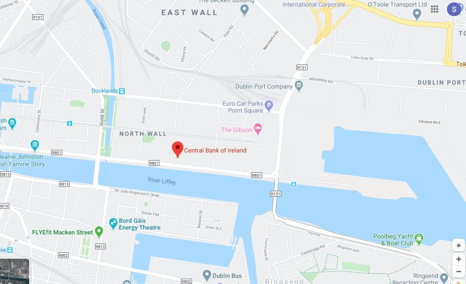
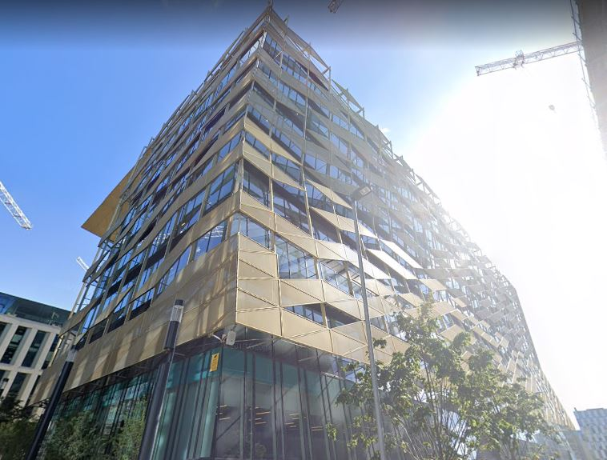

Bonjour et bienvenue sur mon site web
Ce bâtiment est une banque située dans un centre d’affaire moderne et luxuriant. Au XVIIIème siècle, c'était un terrain où se trouvait pubs, grues et bateaux. Le changement est brutal mais bénéfique pour la ville. Cette banque a été fondé en 1979, située sur Dame Street à Dublin. Depuis 2017, la banque a déménagée à North Wall Quay dans le Dockland District. La durée de construction de ce nouveau bâtiment est de 5 ans et a coûté 140€ million en tout.

Lien vers Google map
Les Facades de cette banque sont recouvertes de triangle en aluminium anodisé. Ce qui permet de laisser passer les rayons du soleil pour chauffer le bâtiment. C'est bénéfique pour le bâtiment car il se chauffe moins et se termorégule.
Ce lieu de travail est moderne et facilite la communication, le travail d'équipe et l'intéraction entre les 8 niveaux. Plus de 1400 personnes travaillent dans cette banque pour compléter certains oblectifs comme la productivité mais aussi la durabilité environnementale.